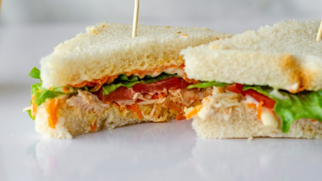

Cozinhe o frango com sal e depois de cozido desfie.
Em um recipiente coloque o frango desfiado, a maionese, a cenoura ralada, o creme de leite e a
salsa, mexa tudo até ficar bem misturado.
Em uma forma ou um recipiente de vidro, de preferência retangular, coloque uma camada de pão e
acrescente o recheio e por cima coloque o alface e depois o pão.
Após todos os pães prontos, se desejar, corte ao meio ou corte cada um deles em 4 partes.
Com o alface que sobrou decore a forma em volta.
Resultado final!

Pizza de Liquidificador fácil
Ingredientes necessários (10 porções):
1 xícara (chá) de leite;
1 ovo;
1 colher (chá) de sal;
1 colher (chá) de açúcar;
1 colher (sopa) de margarina;
1 e 1/2 xícara (chá) de farinha de trigo;
1 colher (sobremesa) de fermento em pó;
1/2 lata de molho de tomate.
Sugestão de Recheio:
250g de mussarela ralada grossa;
2 tomates fatiados;
Azeitona picada;
Orégano a gosto.
Modo de preparo (30 min):
No liquidificador bata o leite, o ovo, o sal, o açúcar, a margarina, a farinha de trigo e o fermento em pó até que tudo esteja encorporado.
Despeje a massa em uma assadeira para pizza untada com margarina e leve ao forno preaquecido por 20 minutos.
Retire do forno e despeje o molho de tomate.
Cubra a massa com mussarela ralada, tomate e orégano a gosto.